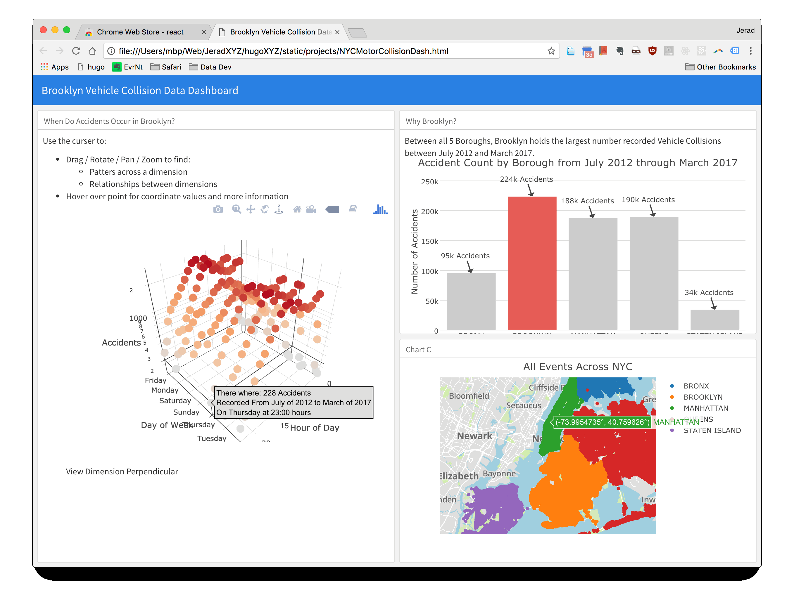

The project explores public safety data through interactive borough-level views.
2017-04-27 · Open data · dashboard · R
NYC Motor Collision Dashboard
A three-panel interactive dashboard based on the NYC motor vehicle collisions dataset and organized by borough.
